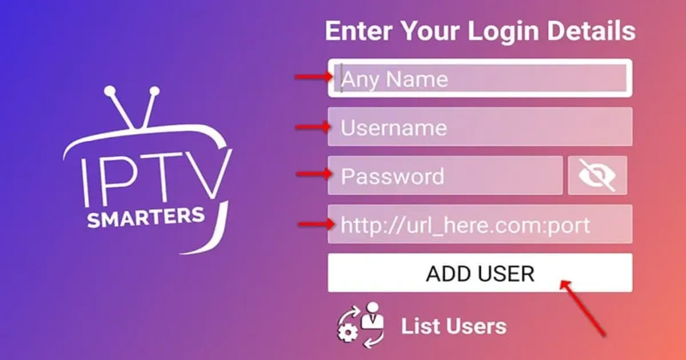
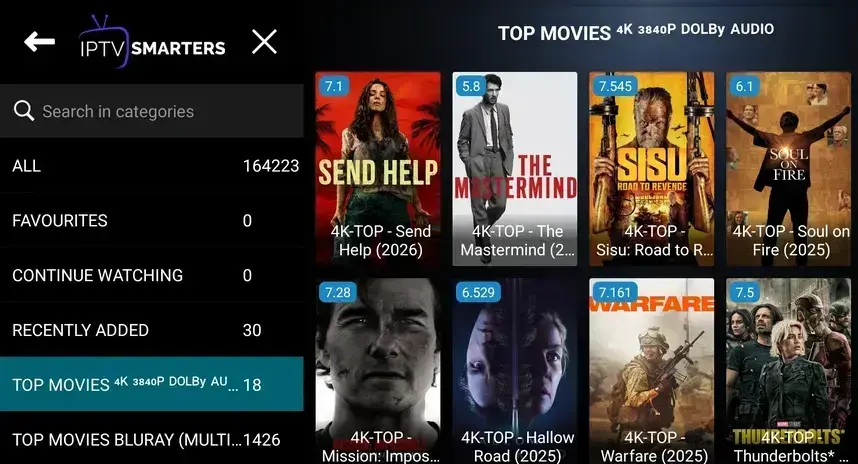
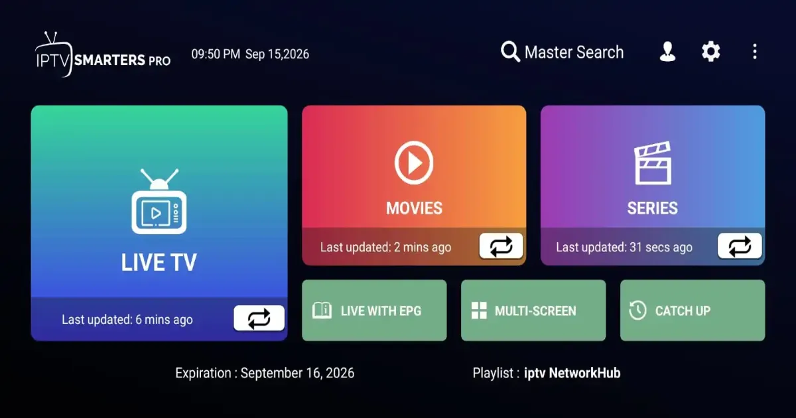

How to Use IPTV Smarters: Beginner's Guide

IPTV Smarters is a player app that organises channels, movies and series from your provider. It is popular because the layout is easy to understand. This guide explains the login choices and the screens you will use every day.
What IPTV Smarters does
It does not provide content itself. It reads the source you give it and presents live channels, on-demand titles and a programme guide.

Login options
Xtream-style login
Enter a name for the profile, your username, password and the server address supplied by your provider.
Playlist URL
Choose the playlist option and paste the link. See what an M3U playlist is for background.
Step-by-step first run
- Install the app on your device, for example a Firestick.
- Open it and accept the on-screen terms.
- Add a new user and choose your login method.
- Enter the details carefully and select Add User.
- Wait for channels to load, then open Live TV.

Main screens
- Live TV: channels grouped by category with a mini guide.
- Movies and Series: on-demand libraries with search.
- Catch-up and EPG: programme listings when your source supports them.

Useful settings
Parental controls, preferred player, stream format and time format are found in Settings. If a channel will not play, try a different player option.
Looking for a more guide-centred app? Compare it with TiviMate. Playback trouble is covered in the buffering guide.
Frequently asked questions
Is IPTV Smarters free?
The app itself is generally free to download, but you still need a source to load. Check the current terms in the app.
Why do I see no channels after login?
Usually a typing error in the server address or credentials, or an inactive account.
Can I use it on several devices?
The app can be installed on many devices, but simultaneous connections depend on your provider.